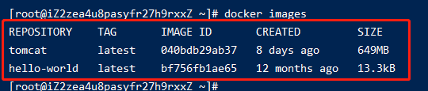
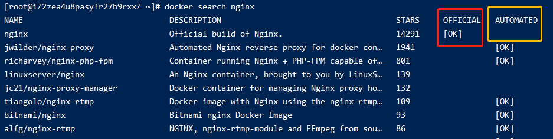
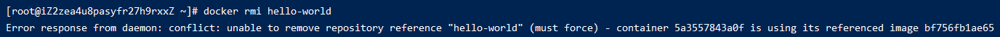
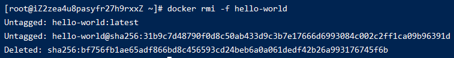
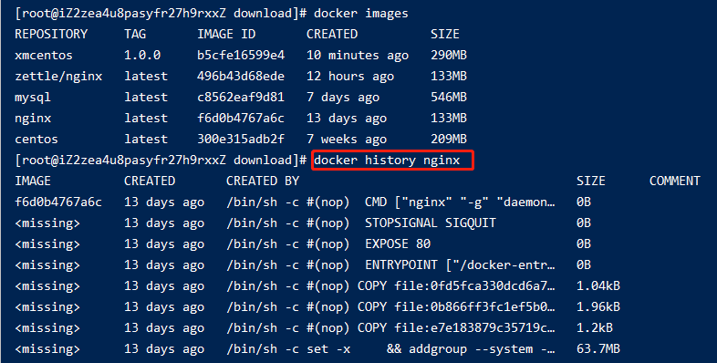

005-docker镜像命令
1、列出本地所有镜像
docker images [可选参数] 会列出本地已经存在的所有镜像

1.1 可选参数
| 参数 | 说明 |
|---|---|
| -a | 显示所有镜像，包括中间层 |
| -q | 只显示镜像ID |
| -qa | 是-a和-q的组合 |
| --digests | 显示摘要信息 |
| --no-trunc | 显示完整信息 |
2、搜索镜像
docker search [名字] [可选参数]: 从docker仓库搜索某个镜像

其中
OFFICIAL: 意为官方镜像AUTOMATED: 意为自动构建类型的镜像
2.1 可选参数
| 参数 | 说明 |
|---|---|
| --no-trunc | 显示完整信息 |
| --filter或-f | 基于给定条件过滤输出 |
| -s | 弃用，推荐用--filter |
| --automated | 弃用，推荐用--filter |
docker search nginx --filter stars=100: 搜索出点赞数大于等于100的nginx镜像docker search nginx --filter is-automated=true: 搜索出属于自动构建的nginx镜像docker search --filter is-official=true --filter stars=100 nginx: 搜搜出官方并且点赞数大于100的nginx镜像
3、下载镜像
docker pull [名字][:版本号]
4、删除镜像
docker rmi [名字或镜像id][:版本号]
4.1 强制删除
在删除的时候，如果镜像以前有运行过，即产生过容器。那么docker会要求我们先删除以前的运行过的容器

一种就是我们执行删除容器的命令先删除容器，再来删除镜像。
另外一种就是执行docker rmi -f强制删除，这条命名会先去删除容器再上传镜像

4.2 一次删除多个镜像
docker rmi [名字或镜像id] [名字]: 镜像名称之间用空格隔开
4.3 一次删除所有镜像
docker rmi -f $(docker images -qa)
5、查看某个镜像的构建脚本
docker history [镜像名称或镜像id]: 查看dockerFile的构建脚本
